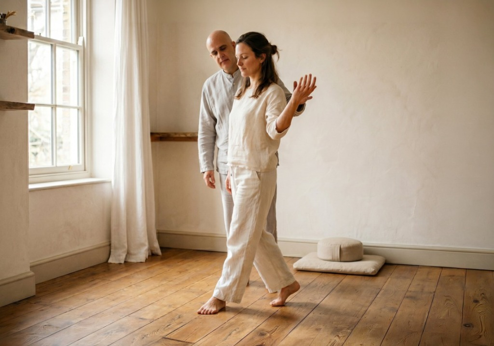
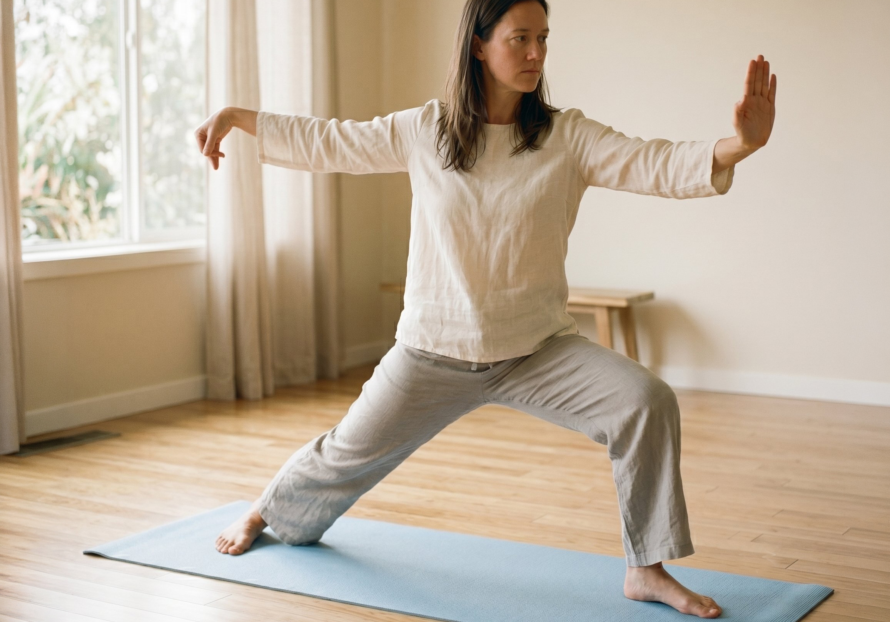

Massage & Bodywork · Basel
A place to
pause, and
truly move.
Professional massage and bodywork for body, mind and spirit — in the heart of Basel, for the international community that calls it home.
Our modalities
Five paths to feeling well

01
Classic Massage
Long, flowing strokes that ease tension and restore your whole body — the perfect reset.
Learn more →
02
Shiatsu
Japanese pressure-point therapy done fully clothed — no oils, no undressing. Pure balance.
Learn more →
03
Tuina
Dynamic Chinese medicine for deeper therapeutic work — woven into your session where needed.
Learn more →
04
Connected Movement
Subtle, effortless motion — guided and self-led — to rediscover how your body wants to move.
Learn more →
05
Qigong
An individually prescribed moving practice — sequences chosen for your body, your health, your goals.
Learn more →"A good treatment is one that makes the client stronger — and strength is achieved through experience and awareness."— The Pause & Move approach
Besides relieving you of what brought you here, the goal is to give you something that will make you need these sessions less in the future — not more. That means giving you experience, not just a service.
There are many ways to get healthier, stronger and happier — from the food we eat to our daily habits to how we treat others. What happens in the session ripples outward. When the experience is positive, those changes tend to cascade into the rest of life.
Experience over service
The aim is to pass on knowledge, build awareness, and leave you with something tangible beyond the hour.
Honesty about limits
Where this practice isn't the right fit, you'll be referred to someone whose system is better equipped for the job.
The whole person
Body, mind, spirit. Not as a slogan — as a genuine framework for how every session is approached.

"I moved to Basel two years ago and finding Pause & Move was the best thing I did for myself. I finally feel at home — in my body and in this city."— Sarah K., expat from London

About Pause & Move
The body, the mind,
the whole person.
A practice built on genuine curiosity about how we move, how we feel, and how we can help each other get better.

Your therapist
Balancing tradition
and modern practice
I came to bodywork through a long personal journey with movement, martial arts and the Feldenkrais method. What began as curiosity became a calling: I wanted to understand not just how the body works, but how it feels from the inside.
Over the years, I trained in Classical Massage, Shiatsu, Tuina and Chinese medicine alongside Western anatomy and movement science. The combination felt natural — because in practice, the body doesn't separate these things. Neither do I.
I practise in Basel and see a lot of people from the international community — people navigating a new country, a new body, or simply a very busy week. English and Hebrew are my mother tongues, and my German is getting there.
The philosophy
Experience, not just a service.
Besides relieving people of the problem that originally brought them into the clinic, the goal is to give them something that will make them need these services less in the future. A good treatment is one that makes the client stronger — and strength is achieved through experience and awareness.
Strength through experience
The body learns through doing, not through being told. Every session is an opportunity to give you a genuine experience — of how your body feels, moves, and responds — that you carry with you long after you leave.
Health in all layers of life
There are many ways to get healthier, stronger and happier — from the food we eat to our daily habits to the way we treat others. The experiences we go through in the clinic affect all of these layers. When the experience is positive, those changes cascade outward.
Honesty about limits
The knowledge entrusted to this practice is passed on openly. And where that knowledge isn't the right fit for what you need, you'll be referred — without hesitation — to a practitioner whose system is better equipped for the job.
"Taking care of oneself takes part in all avenues of life. What happens in the clinic is just one thread — but when it's a good one, it weaves into everything else."— Pause & Move

Services & Pricing
An investment in
feeling yourself again.
Every session is tailored to you. Choose your therapy, your duration, and let the rest unfold.
Single Session
Every session is different,
because you are.
Rather than booking a specific technique, you bring what's going on — and the session is built around that. Shiatsu, classic massage, connected movement, Tuina — whatever serves you best that day. Every journey starts somewhere. A single session is complete in itself — and sometimes it's also where something longer begins.
After every session, you'll receive a short personal note on what was worked on and what to notice in the days that follow. Not a report — just a thread to stay connected to the work between visits.
Packages
Know when to Pause.
Know when to Move.
The body responds to regularity. These packages are built around two different intentions — restoration and resolution — each with its own rhythm, its own perks, and its own pace.
Pause
For restoration, relaxation & switching off
Some things get better simply by doing them regularly. No agenda, no goal — just showing up for yourself, consistently. The body remembers.
Included in every Pause package
Pause · 4 sessions
Fortnightly · 2 monthsPause · 8 sessions
Fortnightly · 4 monthsMove
For specific issues & defined goals
When something specific needs addressing, frequency matters. These sessions build on each other — each one informed by the last. Skipping breaks the thread.
Included in every Move package
Move · 4 sessions
Fortnightly · 2 months · 60 minMove · 8 sessions
Fortnightly · 4 months · 60 minMove — The Long Game
For people living with a chronic condition
The goal isn't a quick fix — it's building something sustainable. Regular sessions over an extended period, designed to keep the body from falling too far behind itself and to gradually build resilience over time.
This programme isn't booked in advance. After your first session, if we both feel that sustained ongoing work makes sense, we'll sit down together and work out the right frequency and duration for where you are and where you want to get to.
Included in The Long Game
Duration and frequency are agreed together after your first session. Book a single session to begin — and we'll take it from there.
Not sure which track is right for you?

Our modalities
Five therapies.
One integrative approach.
Each modality has its own character and strengths. Together they give us the range to meet wherever you are.

What is Classic Massage?
Simple, effective, deeply relaxing
Classic massage is performed directly on the skin using oil, with smooth rhythmic strokes that warm the muscles and guide you into deep relaxation. It's wonderfully straightforward — and works every time.
Muscle relaxation
Flowing strokes release built-up tension, leaving muscles loose, warm and comfortable.
Pain relief
Gentle kneading eases aches in the back, neck, shoulders and beyond.
Body & mind reset
The steady rhythm calms the mind as much as the body — many people feel lighter for days.
Better circulation
Stimulates blood flow, helping your body feel warmer, lighter and more energised.
A session typically covers the whole body — back, shoulders, legs, arms — with the pressure and focus adjusted entirely to you. Prefer something firm? Lighter touch? Need extra attention on your lower back? Just say so.
Classic massage works beautifully as a standalone treat or as a gentle introduction if you're new to massage therapy. It also pairs wonderfully with more targeted work like Tuina.
Great for
What is Shiatsu?
A fresh way to listen to your body
Rooted in traditional Japanese medicine, Shiatsu uses gentle pressure, kneading and guided stretching to help your body find its natural balance. Done fully clothed — no oils, no undressing.
Fully clothed
No oils, no undressing — just wear something comfortable and settle in.
Move more freely
Stretching and acupressure work together to ease stiffness and improve how you move.
Whole-system support
Shiatsu supports circulation, energy, and mood — not just where it hurts.
Fits your life
Works beautifully on its own or alongside other care you're already receiving.
During a session, your therapist uses gentle pressure and guided movement to work through areas of tension and help your body find its natural rhythm. It's deeply relaxing — many people fall asleep.
Over time, regular sessions can help restore posture, coordination, and a general sense of ease that makes everyday life feel lighter.
Great for
What is Connected Movement?
A fresh way to listen to your body
Drawing on the Feldenkrais method and traditional Japanese martial arts, Connected Movement uses subtle, effortless motion — both guided and self-led — to help you rediscover how your body naturally wants to move.
Gentle & effortless
No strain, no forcing. Small, quiet movements that open up big changes over time.
Body & connection
Sessions explore how we relate to ourselves and to others through movement and touch.
Learning through play
Experiential and curious — you learn by doing and noticing, not by being told.
Tuning in to your senses
Each session invites you to pay attention to what your body is actually telling you.
Connected Movement doesn't come from a single tradition — it's a blend of eastern philosophy and western movement science, shaped by years of personal practice.
Whether you come with a specific goal or simply curious, you'll leave with a clearer sense of how your body moves — and why.
What it can do for you

What is Tuina?
Chinese medicine in your hands
Tuina is more vigorous and fast-paced than Classic Massage or Shiatsu. Rooted in Chinese medicine, it uses strong, targeted techniques to address both physical complaints and wider imbalances.
Dynamic & targeted
More active than other therapies — precise techniques applied with real intention and pace.
Joint & muscle relief
Particularly effective for stubborn complaints that gentler approaches haven't shifted.
Chinese medicine roots
Works with the body's energy pathways to restore balance from the inside out.
Beyond the physical
Tuina's roots in Chinese internal medicine mean it can address systemic issues — digestion, sleep, fatigue, hormonal balance — not just pain and tension.
Woven into your session
Tuina isn't a separate booking — it's brought into your session wherever it's the right tool for the job. When your body calls for more vigorous, targeted work, that's what you'll get, combined with whatever else serves you best that day.
Tuina techniques may be introduced at any point in a session — briefly, or as the main focus — depending on what you're working through. There's no need to request it specifically. If it's right for you, it'll be there.
It's particularly effective for chronic or recurring complaints that haven't responded to gentler approaches — and for addressing imbalances that go beyond the physical.
Great for
What is Qigong?
Movement as prescription
Most people have seen Qigong practiced in parks, in groups, following a leader. That's a wonderful way to practice. But a one-to-one session is something different — the movements here are chosen specifically for you, drawn from a wide repertoire and prescribed based on your body, your health picture, and the principles of Chinese medicine.
Individually prescribed
Every sequence is selected for your body — your physical limitations, your TCM syndromes, your Western medical picture. Not adapted from a class. Built for you.
Rooted in Chinese medicine
Each exercise carries specific therapeutic intent within the TCM framework — working with the body's energy pathways, not just its muscles and joints.
Accessible to all
Suitable for a wide range of physical conditions. The practice is shaped around your limitations, not despite them.
Deepens existing practice
Already practice Qigong in a group? Individual sessions let you refine your form, understand specific sequences, and work on what your body needs.
A session is a moving practice — not unlike Taiji in character. Slow, intentional, aware. Some sessions feel like deep rest in motion. Others feel like genuine work. Most feel like both. Elements of Connected Movement may be woven in where relevant.
Qigong here serves many intentions — restoration, therapeutic goals, chronic condition management, or simply the refinement of a practice you already love. The prescription changes. The practice is always yours.
Great for

The Journal
Thoughts for body and mind.
Practical insights, gentle reflections, and the occasional surprising thing about how we move through life.

Featured
Why your shoulders carry
more than stress.
We hold tension in patterns that go beyond the physical. Understanding where your tension lives — and why — is the first step to letting it go for good.
Shiatsu
Five things Shiatsu can do that massage can't
Not better, not worse — just different. Here's what makes Shiatsu uniquely useful for certain situations.

New to Basel
Moving to a new city and what it does to your body
Relocation stress is real — and it shows up physically in ways most people don't expect.

Connected Movement
What does it mean to feel at home in your body?
It's more than flexibility or strength. It's a quality of attention — and it can be learned.
Get in touch
We'd love to
hear from you.
Questions, booking requests, or just curious about which therapy is right for you — drop us a line.
Send a message
Get in touch
We reply within one working day.
Find us
Pause & Move
Inside Physiopunkt Basel
Meret Oppenheim-Strasse 6
4053 Basel, Switzerland
Opening hours